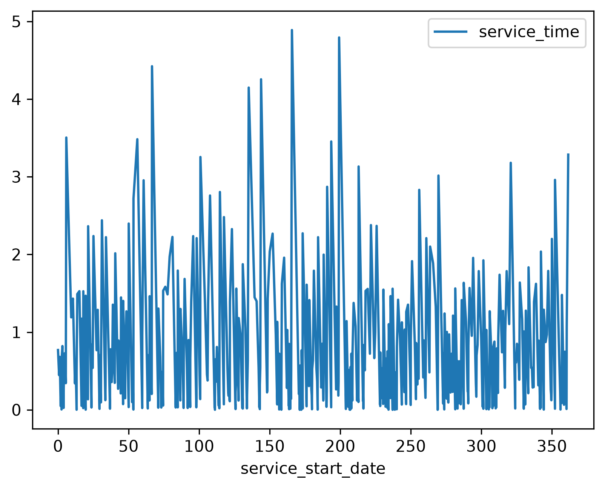
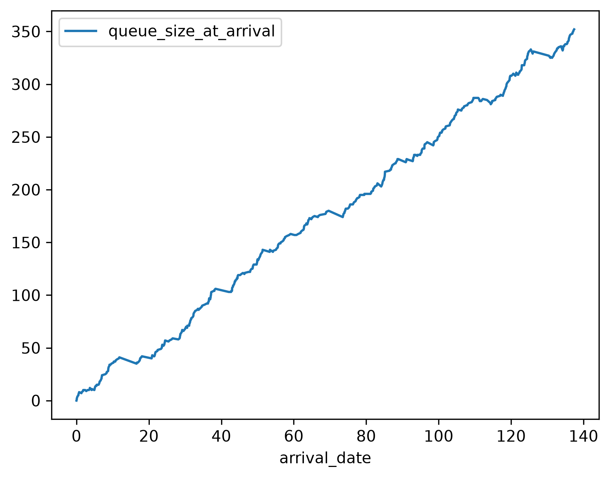
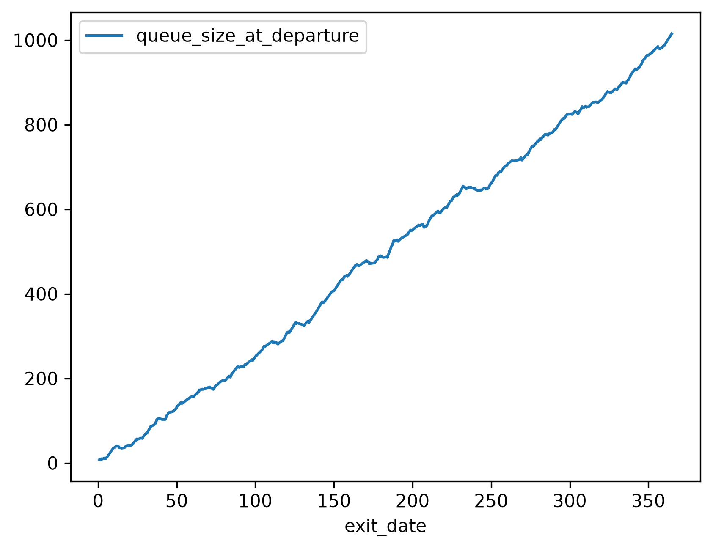

Introduction
Ciw is a Python package for simulating queueing networks.
The two G’s in G/G/1 do not have to be the same distribution, and respectively can be any distribution with non-negative support.
We will use a Hyperexponential distribution for the arrival distribution. A hyperexponential distribution is exactly a mixture distribution of exponential distributions. This has an interpretation of there being an implicit set of arrival processes that each have their own distinct but independent exponential arrival times. In this case we will choose a mixture of four such arrival processes with distinct arrival rates:
\[\begin{align} U_1 \sim & \text{Exponential}\left( \frac{1}{9} \right) \\ U_2 \sim & \text{Exponential}\left( \frac{1}{5} \right) \\ U_3 \sim & \text{Exponential}\left( \frac{1}{6} \right) \\ U_4 \sim & \text{Exponential}\left( 1 \right) \end{align}\]
The following mixture distribution for the arrival times will be used:
\[T_{\text{arrivals}} \sim \frac{1}{5} f_{U_1} + \frac{1}{10} f_{U_2} + \frac{3}{5} f_{U_3} + \frac{1}{10} f_{U_4}\]
We will use a gamma distribution for the sake of example. A gamma distribution is the result of a sum of independent exponentially-distributed random variables, and thus for this example we have an interpretation that the servicing is implicitly a multi-step process where each step has an exponentially-distributed completion time.
Simulation
A G/G/1 queue as described can be implemented and simulated using Ciw (Kendall 1953) in the following way.
"""Simulate a G/G/1 queue with Ciw and collect the customer records."""
import ciw
ciw.seed(2018)
arrival_dist = ciw.dists.HyperExponential(rates=[9, 5, 6, 1], probs=[0.2, 0.1, 0.6, 0.1])
service_dist = ciw.dists.Gamma(shape=0.6, scale=1.2)
HORIZON = 365
network = ciw.create_network(
arrival_distributions = [arrival_dist],
service_distributions = [service_dist],
number_of_servers = [1]
)
simulation = ciw.Simulation(network)
simulation.simulate_until_max_time(HORIZON)
records = simulation.get_all_records()Results
We can tabulate the results.
"""Summarize the G/G/1 queue records with a Markdown table."""
import pandas as pd
from simulate_queue import records
records = pd.DataFrame(records)
print(
records
[['waiting_time', 'service_time', 'queue_size_at_arrival', 'queue_size_at_departure']]
.describe()
.to_markdown()
)| | waiting_time | service_time | queue_size_at_arrival | queue_size_at_departure |
|:-------|---------------:|---------------:|------------------------:|--------------------------:|
| count | 546 | 546 | 546 | 546 |
| mean | 118.578 | 0.668262 | 176.855 | 510.295 |
| std | 64.0327 | 0.813994 | 103.554 | 289.318 |
| min | 0 | 9.40731e-07 | 0 | 7 |
| 25% | 66.9117 | 0.0991315 | 87 | 258 |
| 50% | 119.865 | 0.348732 | 177.5 | 527.5 |
| 75% | 175.243 | 0.901602 | 270.75 | 763.5 |
| max | 224.18 | 4.88812 | 352 | 1015 |We can plot the arrival times against the waiting times.
"""Plot the arrival times against the waiting times for the G/G/1 queue."""
import os
import matplotlib
matplotlib.use("Agg")
import pandas as pd
from simulate_queue import records
here = os.path.dirname(os.path.abspath(__file__))
figures = os.path.join(here, "..", "figures")
os.makedirs(figures, exist_ok=True)
records = pd.DataFrame(records)
ax = records.plot(x='arrival_date', y='waiting_time')
ax.figure.savefig(
os.path.join(figures, "arrival_vs_waiting.png"),
dpi=300,
bbox_inches="tight",
)
We can plot the service start times against the service times.
"""Plot the service start times against the service times for the G/G/1 queue."""
import os
import matplotlib
matplotlib.use("Agg")
import pandas as pd
from simulate_queue import records
here = os.path.dirname(os.path.abspath(__file__))
figures = os.path.join(here, "..", "figures")
os.makedirs(figures, exist_ok=True)
records = pd.DataFrame(records)
ax = records.plot(x='service_start_date', y='service_time')
ax.figure.savefig(
os.path.join(figures, "service_start_vs_service.png"),
dpi=300,
bbox_inches="tight",
)
We can plot the arrival dates against the length of the queue when the customer arrived.
"""Plot the arrival dates against the queue length at arrival for the G/G/1 queue."""
import os
import matplotlib
matplotlib.use("Agg")
import pandas as pd
from simulate_queue import records
here = os.path.dirname(os.path.abspath(__file__))
figures = os.path.join(here, "..", "figures")
os.makedirs(figures, exist_ok=True)
records = pd.DataFrame(records)
ax = records.plot(x='arrival_date', y='queue_size_at_arrival')
ax.figure.savefig(
os.path.join(figures, "arrival_vs_queue_size_at_arrival.png"),
dpi=300,
bbox_inches="tight",
)
We can plot the departure dates against the length of the queue when the customer departed.
"""Plot the departure dates against the queue length at departure for the G/G/1 queue."""
import os
import matplotlib
matplotlib.use("Agg")
import pandas as pd
from simulate_queue import records
here = os.path.dirname(os.path.abspath(__file__))
figures = os.path.join(here, "..", "figures")
os.makedirs(figures, exist_ok=True)
records = pd.DataFrame(records)
ax = records.plot(x='exit_date', y='queue_size_at_departure')
ax.figure.savefig(
os.path.join(figures, "exit_vs_queue_size_at_departure.png"),
dpi=300,
bbox_inches="tight",
)